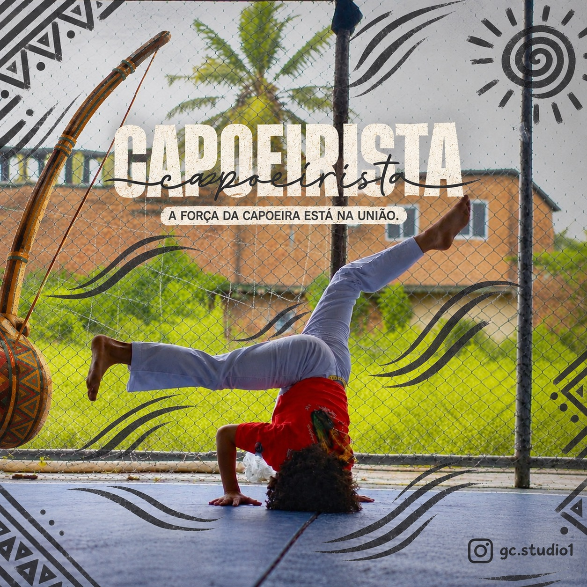

Identidade visual
Ajudo a criar logotipo, cores e tipografia para a marca ter uma imagem consistente.
Crio sites, artes e edições de imagem com visual limpo e foco em comunicar bem.
O que eu façoAjudo a criar logotipo, cores e tipografia para a marca ter uma imagem consistente.
Páginas simples e responsivas, que funcionam bem no celular.
Edição de imagens e artes para redes sociais e peças de divulgação.
Divulgação em redes sociais e materiais para atrair clientes.

Fiz cursos de design na escola e um curso básico de um dia, e já editei imagens de eventos da escola. Também tenho experiência em front-end e já criei alguns sites usando IA como apoio. Gosto de layouts simples e organizados, que comunicam com clareza.
Estou no começo da carreira e quero ganhar experiência trabalhando com design, sites e marketing. Tenho vontade de aprender no dia a dia e crescer junto com a equipe.
Quer conversar sobre design, sites ou marketing? Me mande uma mensagem.
wallacyryan2010@gmail.com